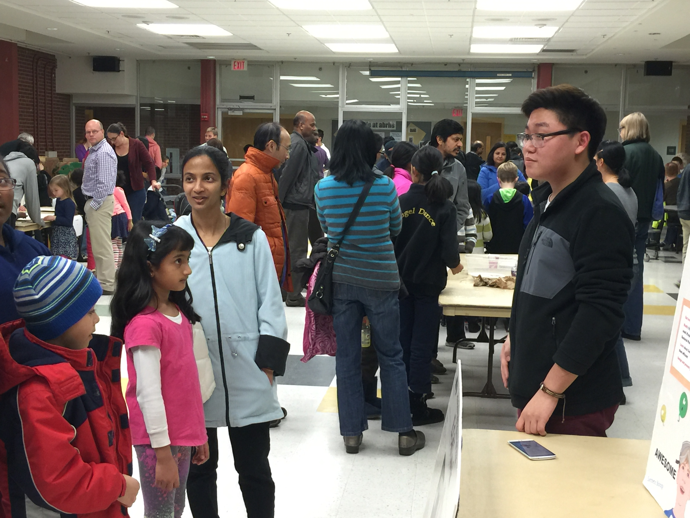
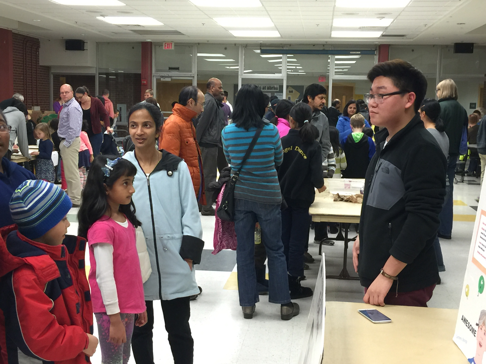

Home
Welcome to the ABRHS 2015-2016 BioBuilder Team.
Abstract
Skin infection can easily be caused by the intrusion of large foreign objects, particularily wood splinters, into the skin. In rural areas where there is little medical attention, contamination of dirt and malignant bacteria can make wounds by foreign objects dangerous. A solution biomaterial that could dissolve fragmented material inside human skin could be grown and stored accessibly in such regions. Such a biomaterial could be injected into a wound site, where enzymes can hydrolyze tough carbohydrates rendering a splinter easily removable by medical tools or by the body's own immune system. By loading a chassis E. Coli with enzymes for the breakdown or wood or other plant material, we can develop a strain of splinter removing bacteria that self-terminates after its job is done.
Project
Our project this year is to make a biomaterial that can dissolve fragmented material inside human skin, particularily wood splinters. Our E. Coli chassis must be able to dissolve this hard plant material in a reasonable time frame, and must render the splinter removable physically or immunologically.
Initial Project Ideas
During our brainstorming sessions, our team members would pool together project ideas or even phrases pertaining to various biological phenomena. Next, we narrowed that list down by having members choose and research any ideas from the list we had made. Members researched problems that their concept could solve, previous iGEM and BioBuilder projects, and parts from iGEM's Registry of Standard Biological Parts. After presenting research, we came together and voted on the project ideas. The foreign material remover was our majority vote.
Team
Our team consists of students from grades 9-12 of the Acton-Boxborough Regional High School. This has been our synthetic biology club's second year participating in BioBuilder and third year in activity, as we competed in the iGEM competition our first year. Our group is diverse and promotes a wide variety of paradigms in our weekly meetings:
Mayank Mali
The 11th grade website designer.
"I love all things STEM, but working on a genetic engineering project is especially fun. It always helps the learning process to see a newly learned concept turn into an end-product so tangible."
Madhuri Jois
The Cool Student
"I love genetic engineering!"
Caleb Trotz
The Cool Student
"I love genetic engineering!"
Aaron Chen
The Cool Student
"I love genetic engineering!"
Roy Yoon
The Cool Student
"I love genetic engineering!"
Ashna Raiker
The Cool Student
"I love genetic engineering!"
Jana Latayan
The Cool Student
"I love genetic engineering!"
Peter Wilson
The Cool Student
"I love genetic engineering!"
Sarah Bluhm
The Cool Student
"I love genetic engineering!"
Katherine Liu
The Cool Student
"I love genetic engineering!"
Aaron Mathieu
The Cool Teacher
"I love genetic engineering!"
Outreach
In order to educate our local community about the field of genetic engineering as well as our own personal endeavors, our BioBuilder team hosted an exhibit at Acton-Boxborough's Science Family Night, where families could come and learn about local STEM projects in our community. During the exhibition, we also conducted a survey with our very own vitamin-A enriched genetically modified yeast-bread. We asked participants whether they would be willing to eat a genetically modified food product. Although we conducted this same survey last year at the same event, we found a larger percentage of people willing to eat genetically modified yeast bread in this year's responses.
 

Labs
We conducted many labs, from our own transformation labs to complete our project, or introductory labs to familiarize our members with the tools and methods required for general sythnetic biology knowledge.
What a Colorful World
Our first lab came with the BioBuilder standard kit and was used to introduce our members to the processes and tools of transformation. Four treatments of E. coli would be produced, one with E. Coli strain 4-1 and the pPRL plasmid, strain 4-2 and pRPL plasmid, strain 4-1 and pGRN plasmid, and strain 4-2 and pPRL plasmid. The pPRL, and pGRN sequences produce purple and green pigment respectively.